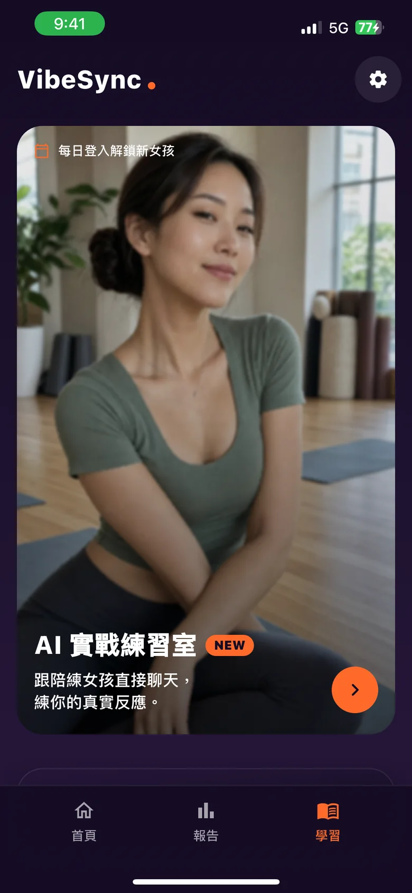

配對成功只是開始
讓她期待你的回覆
不知道怎麼開場？怕說錯話搞砸？丟張截圖給 VibeSync，AI 瞬間看懂局勢，給出最高價值的心動回覆。

從配對到約出來，三步搞定
VibeSync 不只幫你回一句話，而是陪你走完整段對話——每一步都知道下一步在哪。
開場救星
不知道第一句說什麼？丟她的個人檔案截圖（最多 3 張），AI 生成能直接複製送出的開場白。
截圖分析
她回覆了就截圖丟進來，手動輸入也行。健康分數、五維雷達圖、回覆策略，看懂局勢再出手。
AI 教練 1:1
聊到卡關就問教練。教練記得這個對象、你們聊過什麼、你的目標，先問清楚，再給你下一步。
AI 如何幫你脫單？
AI 教練 1:1
務實、不說教、永遠站在你這邊的約會教練。想不通就問，教練會先問清楚你的狀況，再給出下一步判斷。
即時熱度分析 & 健檢
秒速測量互動溫度 (0-100)，點出聊天盲點，「過度投入」時及時警示，不再表錯情。
5+1 智慧回覆策略
根據語境提供五種不同策略，若有選擇障礙，直接套用 AI 最佳推薦。保留你的個性，只讓表達更有魅力。
AI 記得每一個她
每個對象都有獨立檔案與心智圖：聊過什麼、進展到哪、你想走到哪，AI 全都記得，建議越聊越準。
AI 實戰練習室
百位不同風格的女孩陪你實戰訓練，練完拿一張教練拆解卡，真正上場不再手抖。
學習專區
幽默、EQ、眼神、拿回對話重心……社交心法文章庫，學完直接帶進開場救星與教練實戰。
隱私優先，清楚透明
對話內容預設以 AES-256 加密保存在你的裝置中；只有在你主動使用分析、截圖辨識、教練或練習室功能時，系統才會在取得同意後，傳送完成該次請求所需的內容至對應的第三方 AI 服務（Anthropic Claude；練習室為 DeepSeek），用於產生 AI 建議。